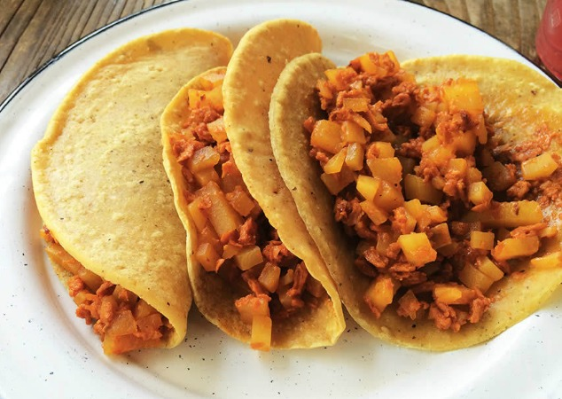
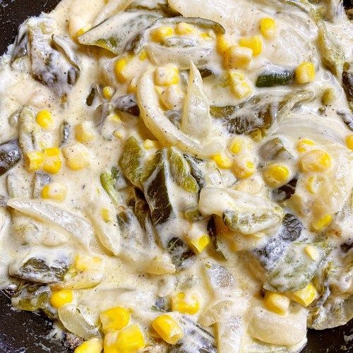
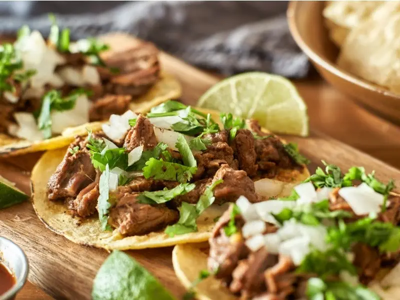

TacoNMadre
Inicio
Nosotros
Menú
Contacto
Menú
📝 MENÚ DEL DÍA
🌮 Guisados
(Todos los tacos tienen un costo de $18 y van acompañados de arroz)
Alambre Mixto
Bistec de res, tocino, jamón, chile morrón y queso
Longaniza con papas
Longaniza y papas 
Rajas con crema
Pechuga, chile poblano, crema y elote 
Suadero

🥗 Acompañamientos
Ensalada de nopal
(al gusto)
Salsas:
Roja o guacamole